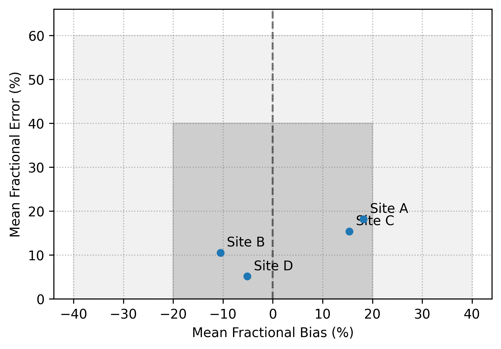

Note
Click here to download the full example code
Soccer Plot¶
What it's for: The Soccer Plot is a summary visualization tool used to evaluate model performance against predefined benchmarks. It is particularly popular in the air quality modeling community for comparing results from multiple sites, models, or time periods in a single view.
When to use: Use this plot when you want to quickly communicate whether model performance meets specific standards (e.g., EPA or industry-standard "Goals" and "Criteria"). It is excellent for high-level summaries of large datasets.
How to read: * X-axis: Typically represents Mean Bias (MB) or Normalized Mean Bias (NMB). * Y-axis: Typically represents Mean Error (ME) or Normalized Mean Error (NME). * The "Goal" (Inner Rectangle): Represents the most stringent performance benchmark. Points inside this box are considered excellent. * The "Criteria" (Outer Rectangle): Represents a standard performance benchmark. Points inside this box are considered acceptable. * Interpretation: Ideally, points should cluster near the bottom-center of the plot (low error, low bias), staying within the "Goal" or "Criteria" boxes.

Out:
Soccer plot saved to soccer_example.png
import pandas as pd
from monet_plots.plots.soccer import SoccerPlot
# Create dummy data
df = pd.DataFrame(
{
"obs": [10, 20, 30, 40],
"mod": [12, 18, 35, 38],
"site": ["Site A", "Site B", "Site C", "Site D"],
}
)
# Initialize Soccer Plot
plot = SoccerPlot(
df,
obs_col="obs",
mod_col="mod",
label_col="site",
goal={"bias": 20, "error": 40},
criteria={"bias": 40, "error": 60},
)
# Generate plot
plot.plot()
plot.save("soccer_example.png")
print("Soccer plot saved to soccer_example.png")
Total running time of the script: ( 0 minutes 0.335 seconds)
Download Python source code: plot_soccer.py